Apprendre
Formations, certifications et apprentissage continu pour consolider mes fondamentaux.
Je construis progressivement mon expertise en cybersécurité à travers des expériences techniques, des certifications, des labs et des projets concrets. Mon objectif est de découvrir les différents domaines de la sécurité informatique et de continuer à apprendre sur le terrain.
Je ne cherche pas à me limiter à une seule branche. Je souhaite explorer les différentes facettes de la cybersécurité, comprendre leurs interactions et construire mon orientation grâce à la pratique.
Formations, certifications et apprentissage continu pour consolider mes fondamentaux.
Rooms, challenges, environnements techniques et projets pour transformer la théorie en réflexes.
Des réalisations concrètes mêlant cybersécurité, systèmes, réseaux, électronique et développement.
Une pratique régulière par les rooms et challenges pour développer mes réflexes de sécurité. Mon parcours reste volontairement généraliste : réseau, web, Linux, OSINT, forensics et autres domaines rencontrés en pratique.
Ma pratique TryHackMe constitue l’un des éléments centraux de mon portfolio. Je travaille les rooms de manière progressive, avec une approche orientée compréhension, reconnaissance, analyse et résolution.
malek@cyber:~$ tryhackme --profile
profile = mk.klimane
rank = top 25%
rooms = completed
approach = hands-on
focus = multi-domain
malek@cyber:~$ _
Les certificats ne sont pas seulement affichés : leur contenu est détaillé pour montrer les domaines réellement travaillés.
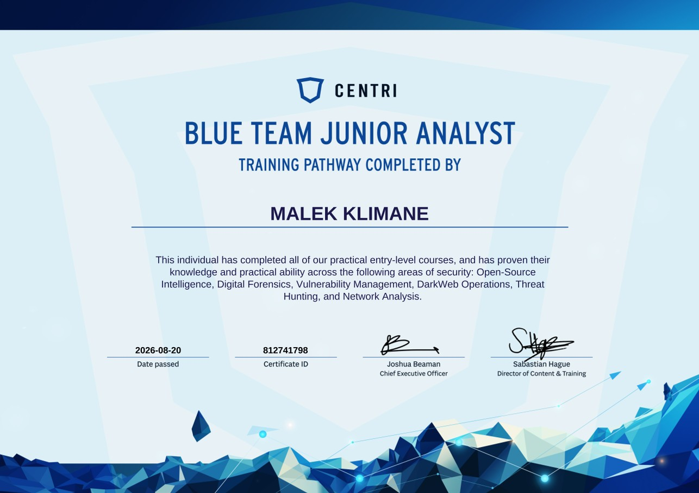
2026Parcours pratique d'entrée de gamme validant des connaissances et une capacité pratique autour de plusieurs domaines de sécurité.
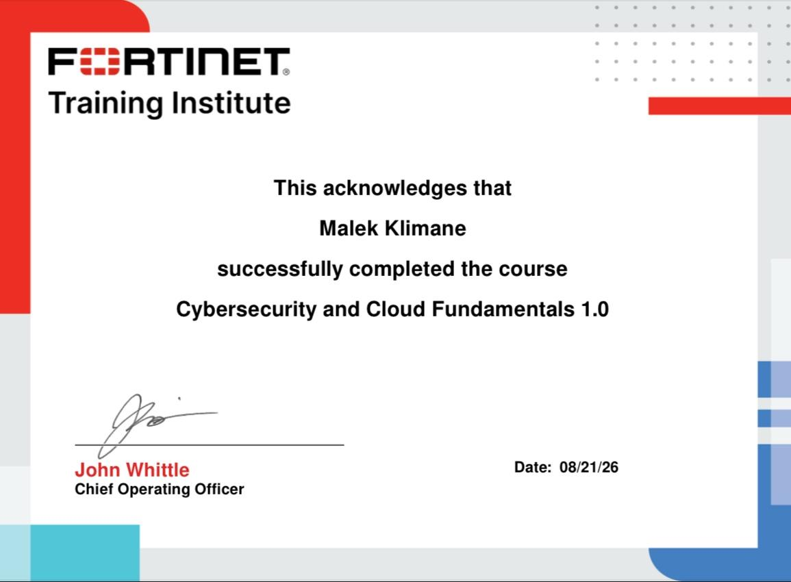
2026Fondamentaux de cybersécurité et de cloud, avec une approche de découverte des enjeux de sécurité des environnements modernes.
Administration et exploitation d'un environnement IT : gestion de parc, Active Directory, Microsoft 365, déploiement logiciel et accompagnement des utilisateurs.
Une expérience très opérationnelle mêlant support, infrastructure, réseaux et mise en place d'outils IT. J'ai notamment réalisé en autonomie l'installation complète de GLPI avec un environnement XAMPP, MariaDB et phpMyAdmin.

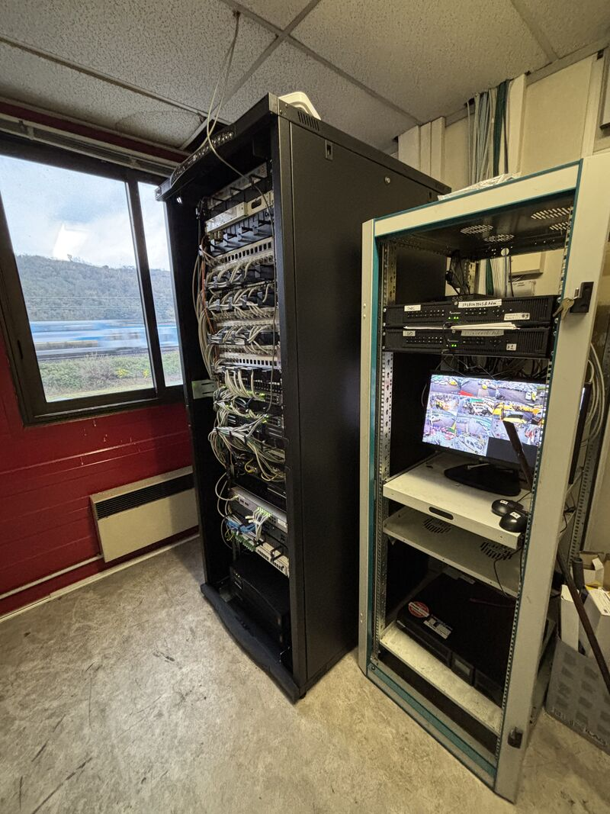

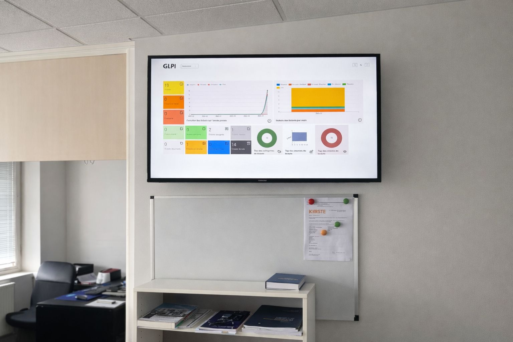
Intervention dans un environnement technique avec maintenance préventive et corrective, diagnostic, remplacement de composants, soudure et tests.
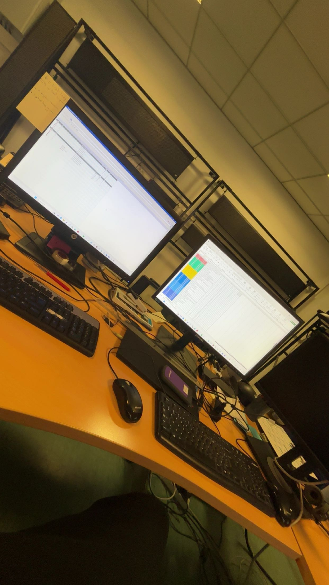

Gestion des réseaux sociaux, conseil personnalisé en magasin et gestion des stocks. Expérience professionnelle complémentaire, volontairement moins mise en avant que le parcours technique.
Les formations sont présentées dans l'ordre chronologique, avec les établissements et leurs identités visuelles.
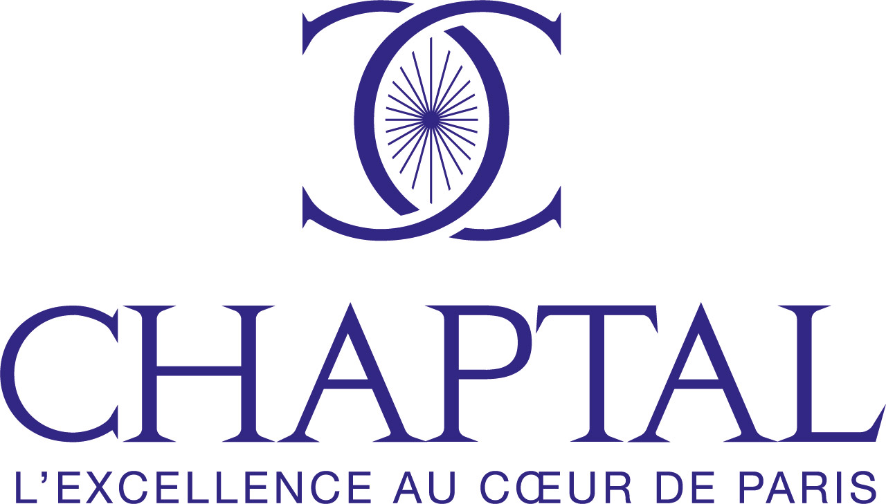
Sciences et Technologies de l’Industrie et du Développement Durable
Lycée Chaptal · Paris 9e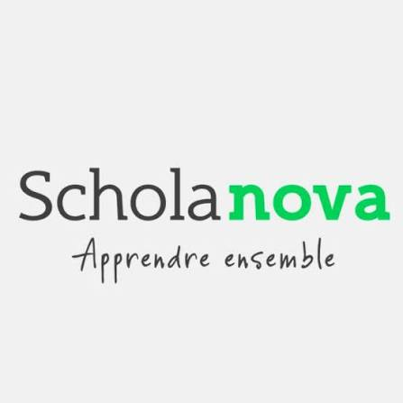
Cybersécurité, Informatique & Réseaux, Électronique
Schola Nova · Paris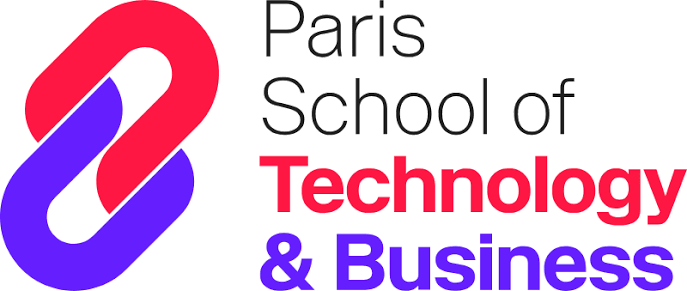
Double diplôme EFREI & PST&B
Paris School of Technology & Business · ParisCes réalisations complètent le portfolio sans détourner l'attention de la cybersécurité, de TryHackMe et des expériences techniques.
Conception d'une IHM pour un banc de test de transmission sur fibre optique : Teensy 4.0, OLED SH1106, multiplexeur TCA9548A, communication I²C/SPI/UART et conception PCB.
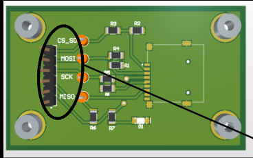
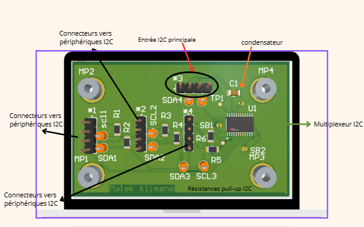
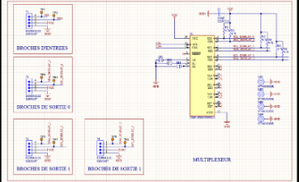
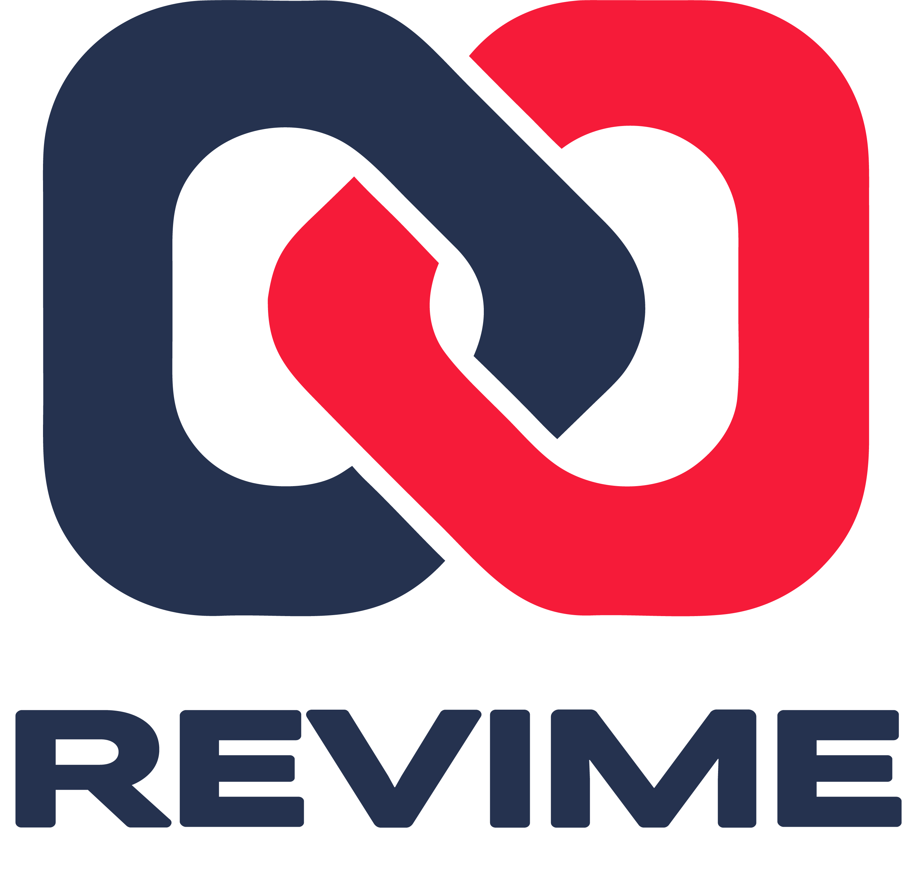
Projet de conception d'une application de réparation. Travail autour du concept, du parcours utilisateur, de la logique métier et de la charte graphique.
Deux lettres de recommandation accessibles directement depuis le portfolio.
Recommandation liée à mon expérience en systèmes et réseaux.
Lire la recommandation ↗Recommandation liée à mon parcours BTS CIEL.
Lire la recommandation ↗À la recherche d'une alternance en cybersécurité pour continuer à apprendre, expérimenter et contribuer à des projets concrets.